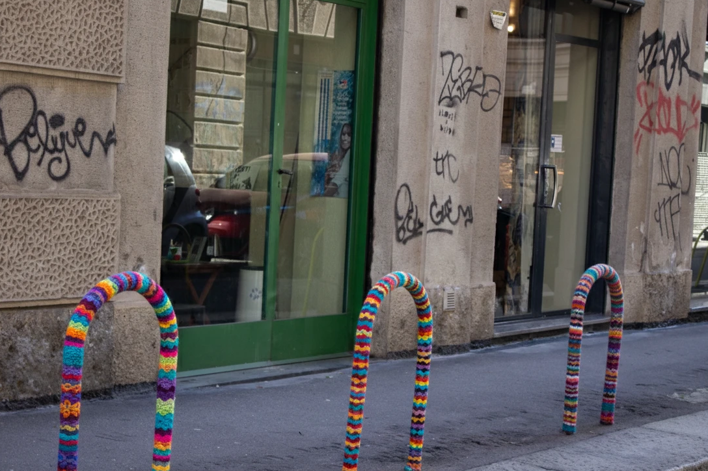
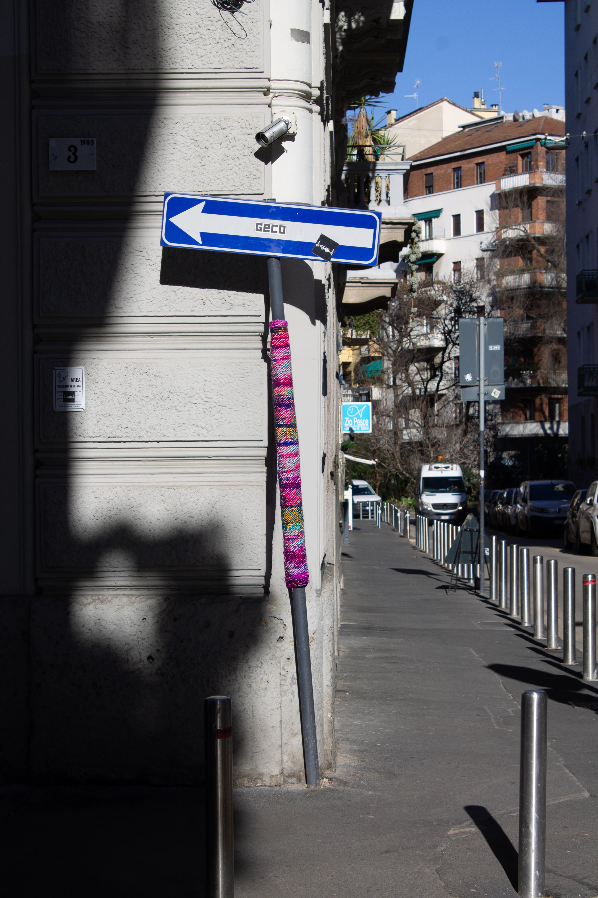
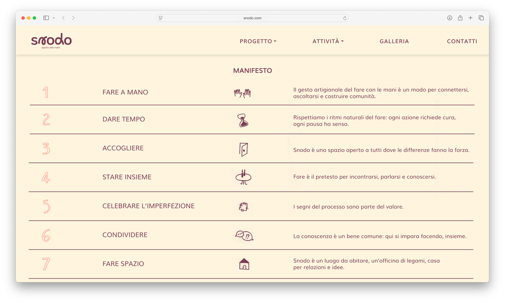
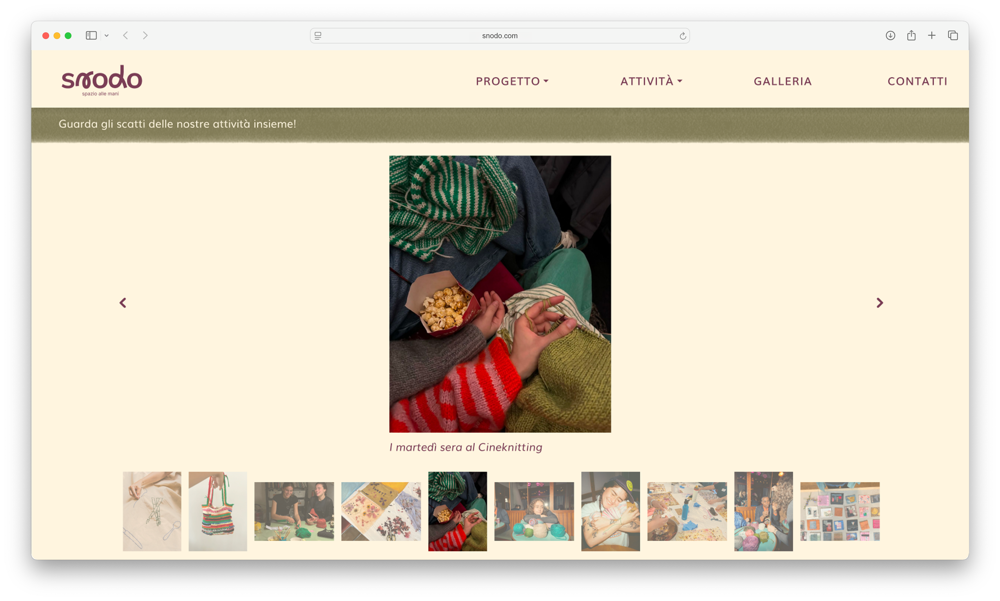

→ FLYERS


The Zonzo mobile app works as a collector of activities. The map function highlights the places that have already been reappropriated by the actions of young people as skating, dancing, writing poems or drawing murales. The feed shows gifs or audio tracks of the other zonzers. Each Zonzer can personalize its personal profile. The Activity section is collection of notions and curiosities about the differnt activities.
→ GUERRILLA KNITTING


SNODO engages with the urban environment through guerrilla knitting—lightweight, widespread actions in public spaces. This is not about advertising or simple decoration; it is a way to temporarily "inhabit" the city. By adding soft, handmade textile fragments to cold, anonymous elements like poles, railings, and benches, SNODO transforms the urban landscape into something warm and welcoming. These interventions are reversible and do not damage the environment. [Images modified with AI]
→ WEBSITE



The SNODO website is designed as a digital extension of the physical workshop experience. The website describes the project's vision and core values. It features a full calendar of activities with detailed descriptions and a photo gallery that serves as a collective memory of shared experiences.
→ SOCIAL MEDIA
Instagram serves as a living diary and community hub: the feed combines practical information, such as monthly calendars and workshop posters, with narrative Reels that capture the tactile atmosphere of crafting. Stories and Highlights further organize the collective memory of the project, facilitating real-time interaction and material donations. Complementing this, TikTok offers an immersive look into the world of "co-crafting." Through "Before & After" videos, POV trends, and quick tutorials, it promotes sustainability and digital detox, transforming the act of repairing into an engaging, rhythmic, and authentic sensory experience for a global audience.